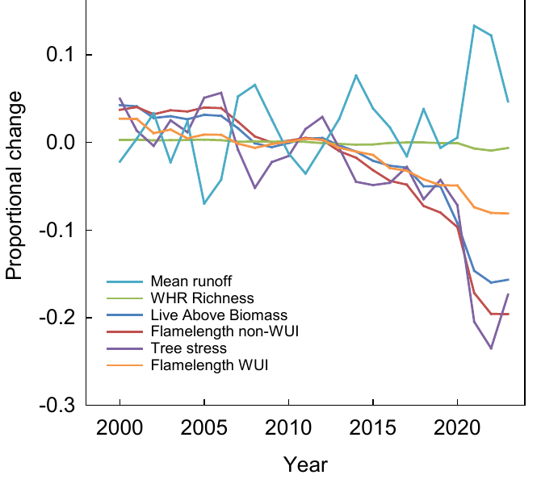
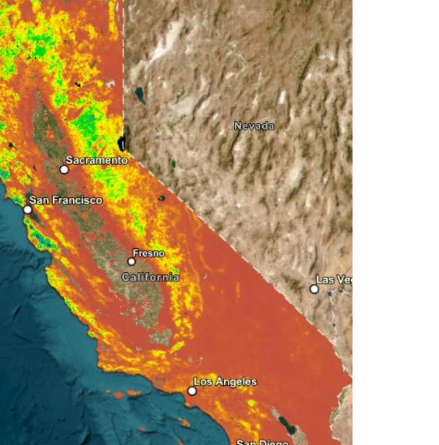

Home / In Use & Findings
The Almanac record is being used in active planning and treatment-evaluation work across California, and the multi-property record is starting to make some patterns visible at the state scale.
Four organizations are currently using Almanac layers in production planning and evaluation work. Engagement is informal and the data are openly available — these are users by virtue of choosing the data, not formal partners.
Almanac layers are being ingested into the Planscape planning tool, where they support project scoping, scenario design, and prioritization across California forest landscapes.
The data are being used to help plan future restoration and fuels-reduction projects and to evaluate the outcomes of past ones — supporting the diligence that underpins forest-resilience finance work.
The Almanac is being used to track and quantify progress against the Wildfire Crisis Strategy's goals — providing a consistent, multi-year evidence base for what has changed and where.
The data are being used in the Regional Resource Kits to support project planning, in scenario planning for the updated Action Plan, and as core metrics to track and quantify progress at the state scale.
Because the layers are produced through a single, internally consistent pipeline, multi-property change can be read as one signal rather than reconciled across separate single-purpose products. At the state scale, the post-2012 record shows several properties moving together.

A synthesis of the post-2012 changes in California's wildlands, and the implications for mitigating future wildfire and drought, is in preparation (Goulden et al., in prep.). The paper draws on the same record to characterize the spatial patterns of recent wildfire and dieoff, the effects on ecosystem services, and the comparison between disturbance-driven change and active management.

The Almanac emerged from a long-running UC Irvine research program (the Center for Ecosystem Climate Solutions, CECS), which has produced roughly twenty peer-reviewed publications across forest ecology, hydrology, and fire behavior. Some of that work contributed methods and inputs that feed today's layers; some used earlier versions of the data; the released layers themselves are new. The program's record is what stands behind the dataset.
The same layers, units, and processing carry through planning, monitoring, and re-evaluation — which is what makes a full adaptive-management cycle tractable on a single coherent data foundation. A project that is planned, executed, and then later evaluated against the same metrics in the same units is far easier to learn from than one stitched across mismatched products.
That is what the current users above are doing, in different forms. Planscape and Blue Forest use the data to set up and refine projects. The USFS Crisis Strategy and the California Task Force use it to monitor and quantify what has changed. The same record serves both halves, by design.